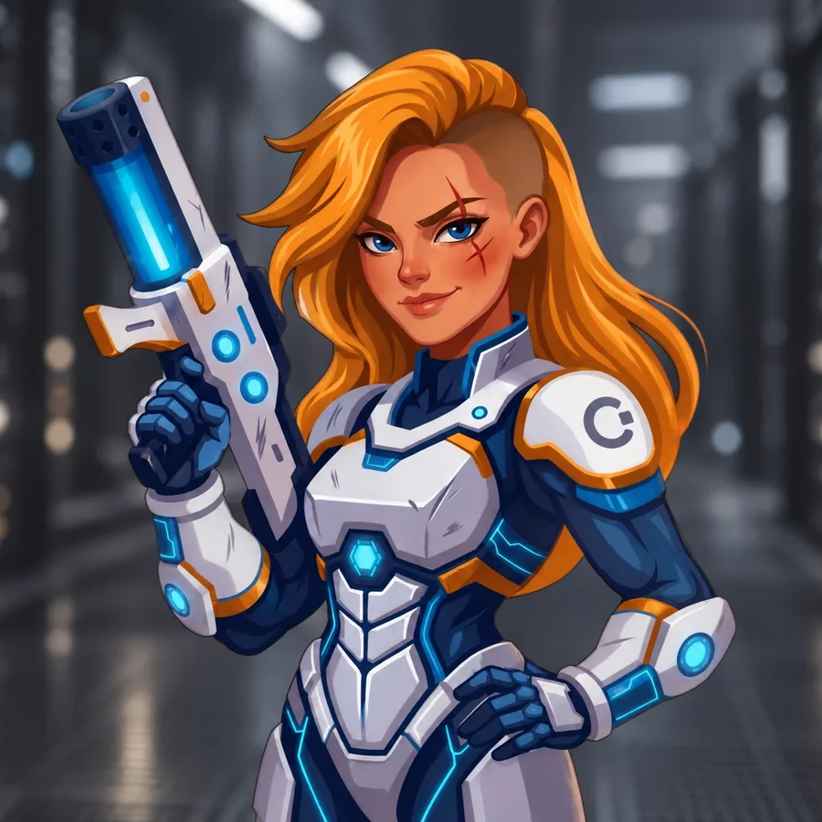
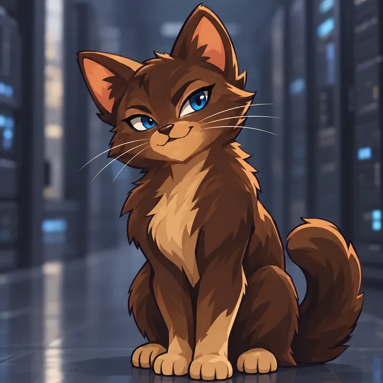
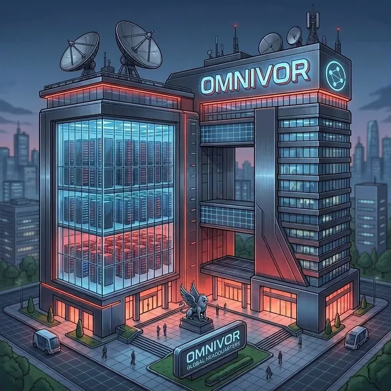
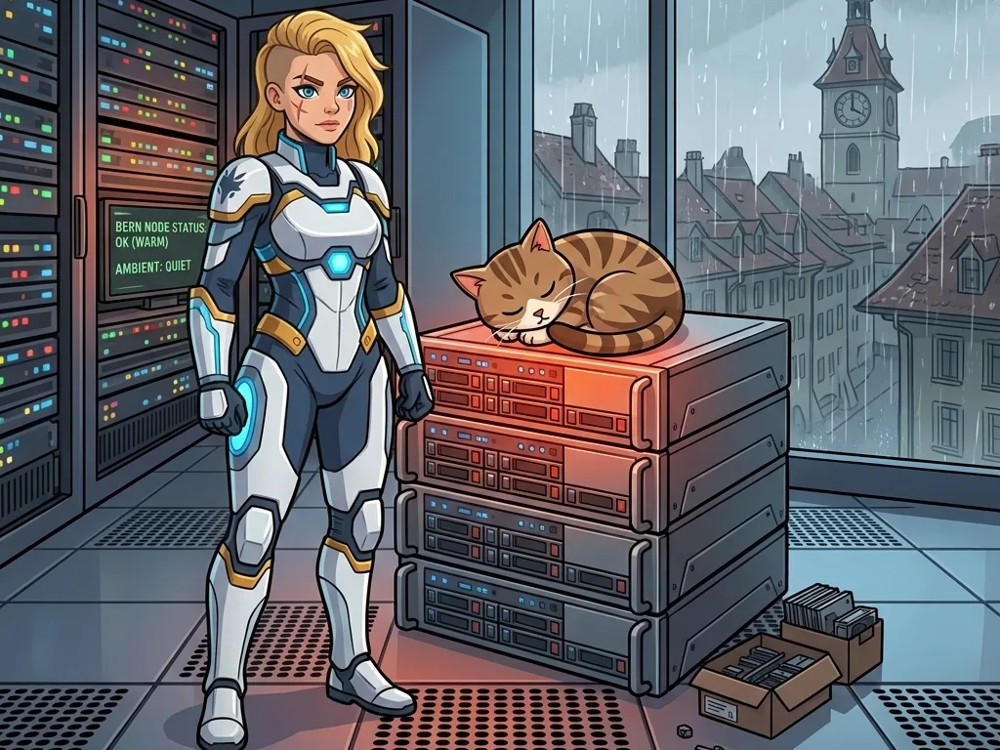

Die Geschichte · Vier Akte, 24 Bilder
Keera fängt nicht als Heldin an. Sie fängt als Zuschauerin an.
Wie Keera in einem Serverraum anfängt - ohne Befugnisse und ohne Publikum -, den Daten bis in eine Halle ohne Adresse folgt und mit genau dem zurückkommt, was ihr dort gefehlt hat.
Den Konzern Omnivor gibt es nicht. Die Klauseln und die Rechenzentren, aus denen wir ihn gebaut haben, schon.
Die Besetzung

Die Heldin
Keera
Hartnäckig und geduldig. Sie folgt einem Kabel bis zum Ende und kommt mit einer Liste zurück.

Der Sidekick
Cache
Ein Kater aus dem Serverraum. Er starrt an, was sonst niemand bemerkt. Es schaut nur lange niemand hin.

Der Gegner
Omnivor
Ein Konzern ohne Adresse. Er stiehlt nie - er nimmt, was niemand ihm ausdrücklich verboten hat.
Akt I - Das Geschenk
Keera sieht es zuerst und kann nichts tun
Eine Übernahme fängt nicht mit einer Drohung an. Sie fängt mit einem Werkzeug an, das nichts kostet und funktioniert.

Akt II - Die stille Invasion
Also folgt sie den Daten
Omnivor muss keine Grenze überschreiten. Ein Häkchen bei den AGB genügt.
Akt III - Was er nicht bezahlt
Auf dem Rückweg nimmt sie den Umweg
Ein Modell dieser Grösse braucht nicht nur Daten, sondern Strom, Wasser und Landschaft.
Akt IV - Das Tor
Keera baut das Tor, das ihr gefehlt hat
Sie kommt nicht als Heldin zurück, sondern mit einer Liste.
Von der Figur zur Funktion
Die Geschichte ist erfunden, die Gegenzüge sind es nicht. Caches Starren zum Beispiel ist der Audit-Trail.
- Offene Weights - keine Blackbox. Du kannst nachlesen und mitnehmen.
- Schweizer Boden - kein Fallback ins Ausland, weil es keines gibt.
- Redaction am Edge - Secrets und Personendaten fallen raus, bevor ein Modell sie sieht.
- Audit-Trail - jeder Versuch wird sichtbar. Auch der aus dem eigenen Haus.
- Erneuerbarer Strom - Wasserkraft und Solar aus dem Netz des Landes.
- Weniger Token - Routing und Caching statt Rohgewalt.
Was wir nicht behaupten
Dass das gratis sei. Dass es klimaneutral sei. Ein Modell zu betreiben kostet Strom, Wasser und Material, und daran ändert kein Zertifikat etwas. Wir sagen dir, woher der Strom kommt, wohin die Wärme geht und wie viele Token eine Aufgabe gekostet hat. Den Rest kannst du selber nachrechnen - genau das ist der Unterschied zu Omnivor.